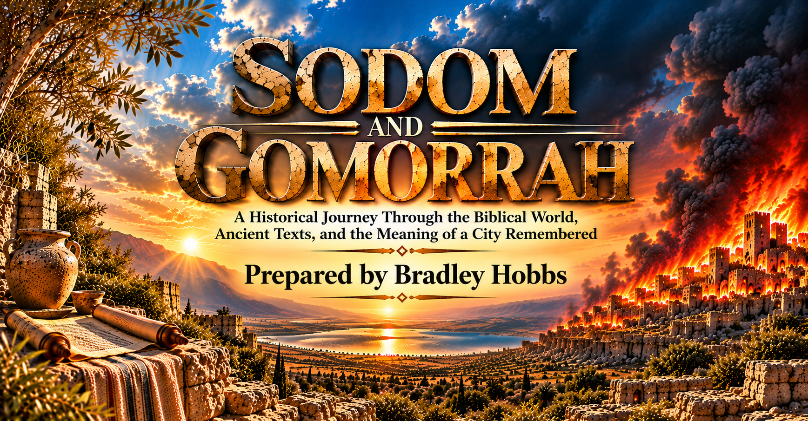

INTRODUCTION
Why Sodom Still Matters
The account of Sodom and Gomorrah has endured across generations, remaining one of the most discussed and debated narratives in the biblical tradition. Its significance reaches beyond the destruction of two ancient cities, raising lasting questions about human conduct, justice, violence, and the ways later generations remember and interpret the past.
Throughout history, readers have approached the story of Sodom from different perspectives. Some have understood the city primarily through the lens of sexual sin, while others have emphasized biblical descriptions of injustice, pride, oppression, violence, and the mistreatment of vulnerable people. Still others have questioned whether later interpretations have placed modern assumptions onto an ancient account. These differences have shaped religious discussion for centuries, making careful attention to the biblical record essential.
One challenge in studying Sodom is the assumption that Scripture offers a single, unchanging description of the city and its wrongdoing. The biblical record is more complex. Sodom appears in several books and in different historical and literary settings, with each reference serving the purpose of its particular author and audience. Genesis tells the foundational narrative, while later biblical writers recall the city when addressing the concerns of their own communities. Those later references contribute to the history of Sodom's interpretation, but they should not be confused with the details or immediate purpose of the original account.
For this reason, the passages must be read with attention to their individual contexts, language, and historical settings. Reading them together can reveal meaningful connections, yet responsible interpretation also requires recognizing their differences. A statement made by a prophet addressing his own generation may draw upon the memory of Sodom without repeating the full purpose of the Genesis narrative. Likewise, a later reference may develop an earlier theme while applying it to a new audience. Distinguishing these layers allows the biblical material to be examined without forcing every passage to answer the same question.
This study follows the story and memory of Sodom through the biblical record, considering the texts in the order and settings necessary to understand their contribution. It begins with the historical world represented in Genesis, then turns to the biblical narrative and the later passages that refer to the city. Along the way, attention is given to the wording of the texts, the circumstances in which they appear, and the ways their meaning has been discussed across generations.
The purpose is not to force every passage into one predetermined explanation or to dismiss interpretations simply because they differ from familiar conclusions. The aim is to examine the available evidence carefully, distinguish the words of the biblical writers from later assumptions, and allow each passage to be understood within its proper context. Such an approach requires patience and a willingness to consider the full record before reaching conclusions.
THE HISTORICAL QUESTION
The central question guiding this study reaches beyond the familiar inquiry, “What sin destroyed Sodom?” It asks how the biblical writers understood the city, why they returned to its memory in different periods, and how the significance of Sodom developed as the story was carried from one generation and literary setting to another.
How did the biblical writers understand Sodom, and how did their understanding develop across time?
That question provides the foundation for the chapters that follow. The first part begins with the world of Abraham, establishing the historical setting in which the account of Sodom enters the biblical narrative.